|
© 1995 by Luciferian Liberation Front |
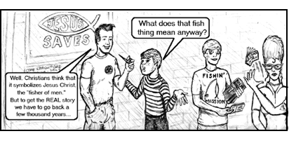
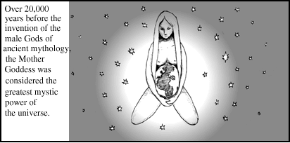
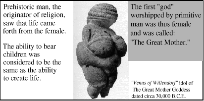
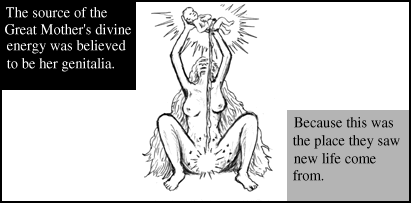
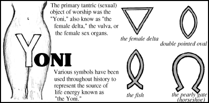
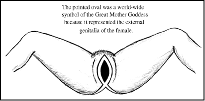
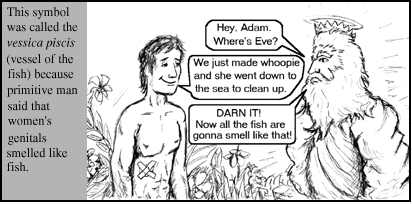
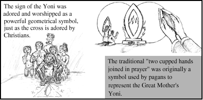
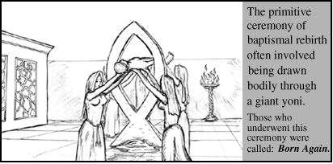
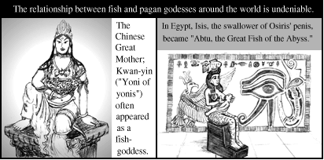
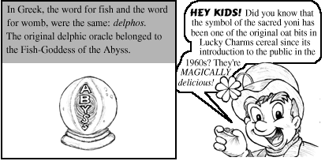
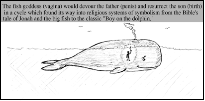
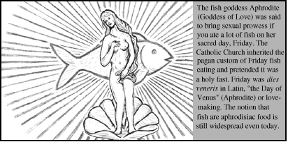
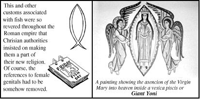
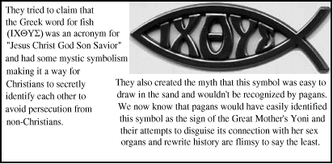
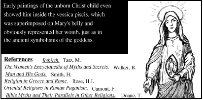
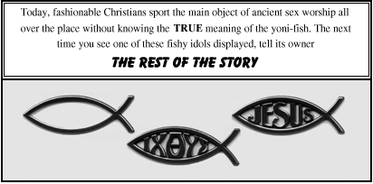
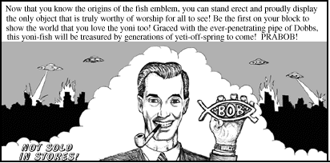

|
Christians display fish as ornaments on their cars, clothes and buildings without a clue as to the origin of this pagan symbol of tantric (sexual) worship of the female's reproductive organs. Although the Bible expressly commands that these images be destroyed (Exodus 34:13), they continue to be used to lure "fish" into the nets of subserviance. Remove the scales of ignorance and fear from your eyes and mind. Step into the light of reason and truth. An AntiChrist Production from the Luciferian Liberation Front, People's Temple, Free Urantia. "Liberating the oppressed, one mind at a time." |